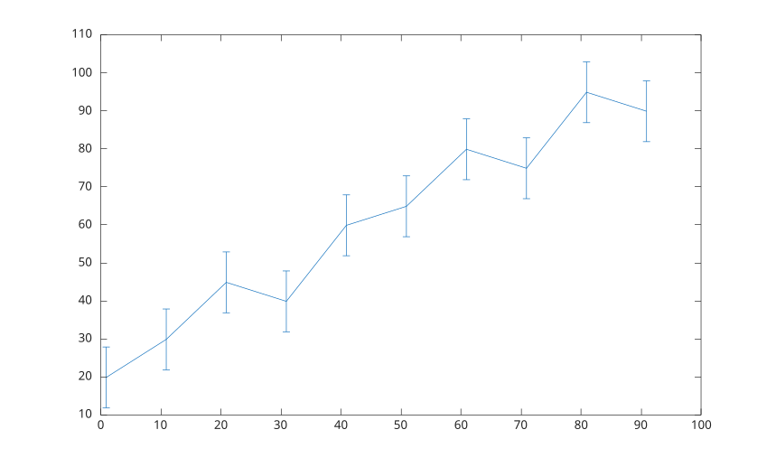
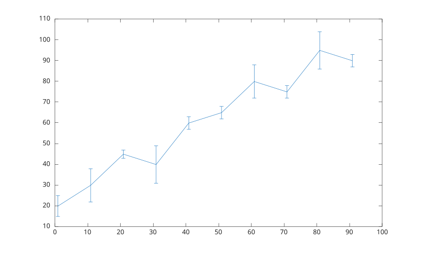
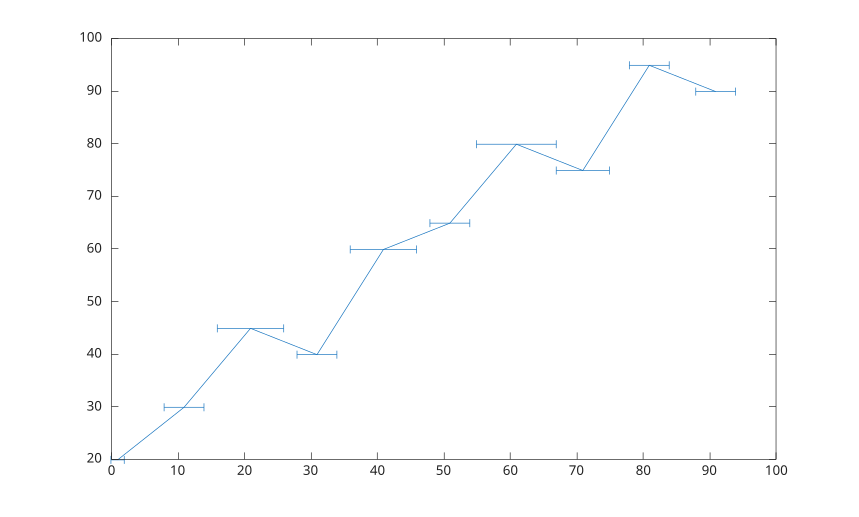
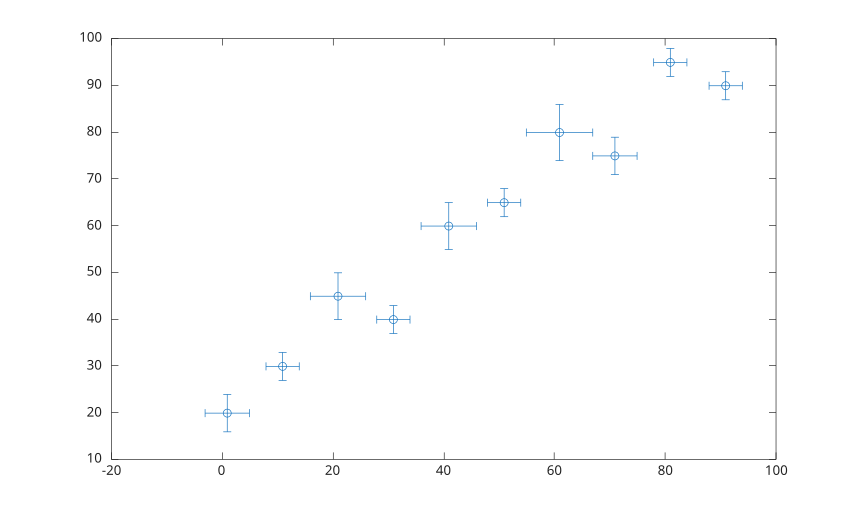
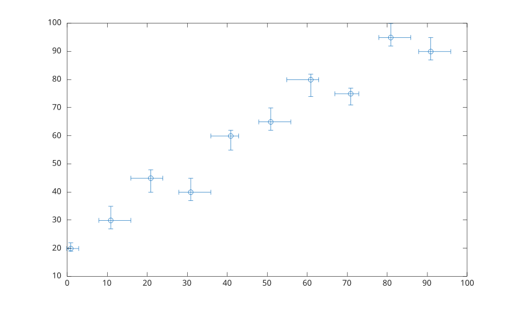

errorbar(Y, E)
errorbar(X, Y, E)
errorbar(X, Y, YNEG, YPOS)
errorbar(..., orientation)
errorbar(X, Y, YNEG, YPOS, XNEG, XPOS)
errorbar(..., lineSpec)
errorbar(..., propertyName, propertyValue)
errorbar(ax, ...)
h = errorbar(...)
| Paramètre | Description |
|---|---|
| X | valeurs x. |
| Y | valeurs y. |
| E | erreurs y symetriques. |
| YNEG | erreurs y negatives. |
| YPOS | erreurs y positives. |
| XNEG | erreurs x negatives. |
| XPOS | erreurs x positives. |
| orientation | orientation des barres d'erreur : 'vertical', 'horizontal' ou 'both'. |
| lineSpec | specification de style, marqueur et couleur. |
| propertyName | nom d'une propriete de l'objet errorbar. |
| propertyValue | valeur d'une propriete de l'objet errorbar. |
| ax | objet axes cible. |
| Paramètre | Description |
|---|---|
| h | objet graphique errorbar ou vecteur ligne d'objets errorbar pour des donnees matricielles. |
errorbar trace des donnees x et y avec des barres d'erreur verticales ou combinees x/y.
Les entrees vectorielles creent un objet errorbar. Les entrees matricielles creent un objet errorbar par colonne.
Voir proprietes de errorbar pour la liste complete des proprietes.
x = 1:10:100;
y = [20 30 45 40 60 65 80 75 95 90];
err = 8 * ones(size(y));
errorbar(x, y, err);
x = 1:10:100;
y = [20 30 45 40 60 65 80 75 95 90];
err = [5 8 2 9 3 3 8 3 9 3];
errorbar(x, y, err);
x = 1:10:100;
y = [20 30 45 40 60 65 80 75 95 90];
err = [1 3 5 3 5 3 6 4 3 3];
errorbar(x, y, err, 'horizontal');
x = 1:10:100;
y = [20 30 45 40 60 65 80 75 95 90];
err = [4 3 5 3 5 3 6 4 3 3];
errorbar(x, y, err, 'both', 'o');
x = 1:10:100;
y = [20 30 45 40 60 65 80 75 95 90];
yneg = [1 3 5 3 5 3 6 4 3 3];
ypos = [2 5 3 5 2 5 2 2 5 5];
xneg = [1 3 5 3 5 3 6 4 3 3];
xpos = [2 5 3 5 2 5 2 2 5 5];
errorbar(x, y, yneg, ypos, xneg, xpos, 'o');